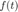
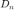
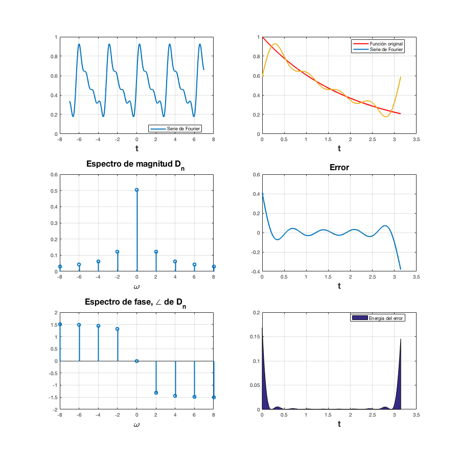
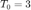

Práctica 5: Series de Fourier
Contents
Programa serie de Fourier exponencial compleja
La serie de Fourier de una señal  periódica puede ser construida bajo ciertas condiciones matemáticas (Dirichlet, aunque estas podrían no cumplirse y aún así la serie existir) de la señal. Si la señal no es periódica pero cumple las condiciones, se puede construir la serie de Fourier en un intervalo de longitud finita (cuando el intervalo es de longitud infinita se puede abordar a la suma de Fourier, exponencial compleja, como una integral y los coeficientes  son muestras de lo que llamamos transformada de Fourier.)
Deberás realizar algunos problemas con las especificaciones que se encuentran al final del documento, para ello se proporciona el siguiente código, que gráfica la serie de Fourier exponencial compleja.
function sfc(t0,tf,dn,d0,f,armo,a,b) % t0 el valor inicial para calcular la serie % tf el valor final donde calcular la serie % dn función de la fórmula de los dn % f función original % armo número de armonicos a utilizar en la gráfica % a, b intevalo para realizar la grafica de la serie
w0=2*pi/(tf-t0);
sf=d0; t=a:0.0001:b;
for n=1:armo sf=sf+dn(-n)*exp(w0*-n*t*j)+dn(n)*exp(w0*n*t*j); end
figure (1) hFig = figure(1); set(hFig, 'Position', [0 0 900 900]) subplot(3,2,1) plot(t,sf) grid on legend('Serie de Fourier','Location','Best') xlabel('t','FontWeight','bold','FontSize',16)
sf=d0; t1=t0:0.0001:tf;
for n=1:armo sf=sf+dn(-n)*exp(w0*-n*t1*j)+dn(n)*exp(w0*n*t1*j); end
subplot(3,2,2) plot(t1,f(t1),'r') grid on hold on plot(t1,sf) legend('Función original','Serie de Fourier ','Location','Best') xlabel('t','FontWeight','bold','FontSize',16) nn=-armo:armo; axis auto
subplot(3,2,4) e=f(t1)-sf; plot(t1,e) title('Error','FontWeight','bold','FontSize',16) xlabel('t','FontWeight','bold','FontSize',16) axis auto grid on
subplot(3,2,6) e=f(t1)-sf; area(t1,e.^2) legend('Energia del error','Location','Best') xlabel('t','FontWeight','bold','FontSize',16) axis auto grid on
absdn=zeros(1,length(nn)); cont=1; for i =-armo:armo if i==0 absdn(cont)=d0; end
absdn(cont)=dn(i);
cont=cont+1;
endsubplot(3,2,3) stem(w0*nn,abs(absdn)) title('Espectro de magnitud D_n ','FontWeight','bold','FontSize',16) xlabel('\omega','FontWeight','bold','FontSize',16) grid on
subplot(3,2,5) % % stem(w0*nn,angle(absdn)) % % title('Espectro de fase, \angle de D_n ','FontWeight','bold','FontSize',16) % % xlabel('\omega','FontWeight','bold','FontSize',16) grid on
end
Por ejemplo si ejecutamos las siguientes instrucciones
d0=0.504; dn=inline('0.504/(1+4*n*j)','n'); t0=0; tf=pi; f=inline('exp(-t./2)','t'); armo=4; a=-7; b=7; sfc(t0,tf,dn,d0,f,armo,a,b)
Realiza lo siguiente:
Para cada problema debes de realizar
- Realizar el programa de la serie que se indica
- Gráfica de la serie de Fourier en un intervalo que muestre 5 repeticiones
- Gráfica de la señal y la serie de Fourier para 4 armonicos
- Gráfica del error
- Gráfica de la energía del error
- Espectro de magnitud para 4 armonicos
- Espectro de fase para 4 armonicos
- Todo lo anterior para 15 armonicos
Se entrega una publicación en html de tu desarrollo
- (20 puntos) Ejemplo 6.1 Con serie y espectro trigonometrico
- (20 puntos) Ejemplo 6.2. Con serie y espectro exponencial y A=3
- (20 puntos) Ejemplo 6.4. Con serie y espectro exponencial
- (20 puntos) Ejercicio 6.5. Con serie y espectro exponencial
- (20 puntos) Ejemplo 6.7. Con serie y espectro exponencial y  sin incluir la gráfica de f, error ni energía del error
El código de esta publicación lo puedes encontrar en el siguiente enlace